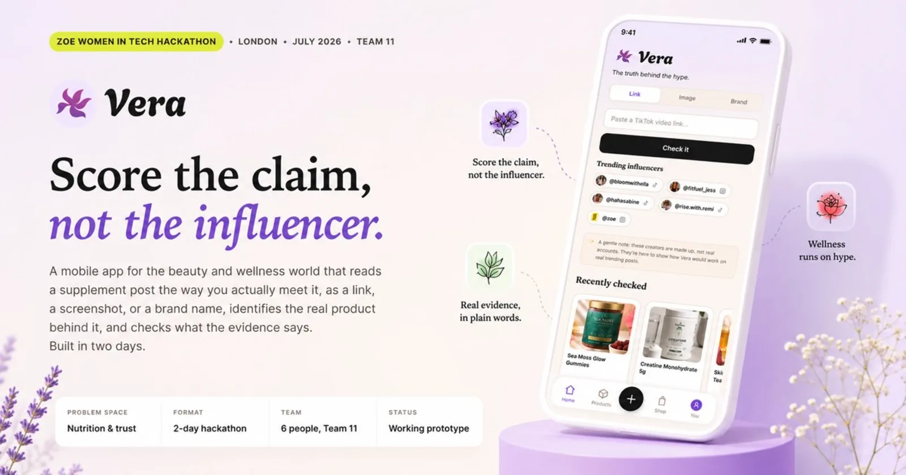
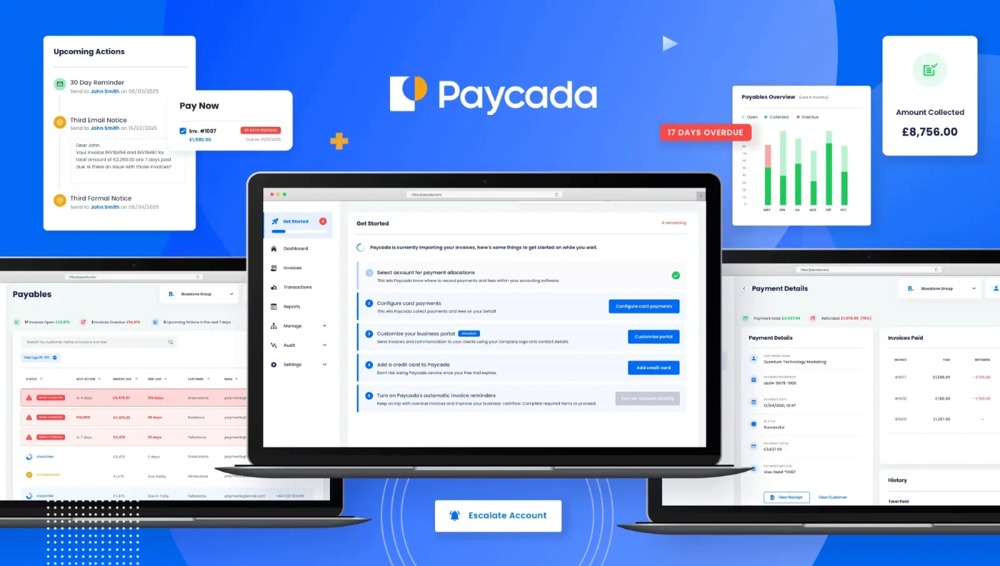

01 Where I am now
“Equally comfortable designing experiences and bringing them to life in code.” Ping Identity, Senior UX Design Developer
This is the sentence I'd have written about myself, and it's why this page exists beyond a CV and a cover letter.
For most of 15 years I designed and handed over. For the last two I've closed that loop myself: design it, build it, put it in front of someone, change it. That's what made me want to be a design engineer, working between code, pixels and experience.
Everything below is evidence for that one claim, taken from your job description.
02 Code as a design tool
“Use code as a design tool, not simply as an implementation medium.”

Vera is my clearest example. A mobile prototype that checks supplement and wellness claims from TikTok and Instagram against scientific evidence: paste a link, upload a screenshot, or search a brand. I led product design and engineering, at the ZOE Women in Tech Hackathon in London in July 2026, in a team of six.
Its claim score is a heuristic, but the numbers behind it are real. A Cloudflare Worker fetches posts server-side, a model with search grounding identifies the product, and OpenAlex returns live counts of peer-reviewed studies.
- 2 daysidea to working build
- 3 inputslink, screenshot, brand name
- Live data7 APIs connected
03 Prototyping before implementation
“Rapidly prototype workflows and usability concepts before implementation.”
Prototyping to explore is one thing. Prototyping to settle an argument is where it gets interesting.
Omaze UK's Monthly Millionaire launched at around £650k a month against a £1m+ forecast. Funnel data showed mobile users engaging almost entirely with the bottom half of the screen, on a customer base skewing 40 and over. 89% of them are on mobile. So we stopped debating layout and rebuilt around reachable actions, value and trust above the fold, and legible type.
Then one hypothesis at a time.
- +7.3%trust signals above the fold
- +4.8%winner reaction video hero
- +8.5%subscription reframed as best value
The third carried real risk: the page led with pay as you go, so promoting the subscription could just have moved revenue between pockets. We measured both. It didn't. 35% conversion uplift, £1.5m in a month, sustained above £1m.
04 Complex enterprise software
“Design user experiences for complex enterprise SaaS applications.”

Paycada is the one I'd bring to this. An automated invoice-chasing platform in regulated fintech, where I was sole designer for three years: platform, marketing site, brand and the design system underneath.
Chasing an invoice means asking a customer for money without damaging the relationship. So the work was about control and tone: what goes out automatically, to whom, what a human sees first, and how far an escalation travels before someone decides.
Veva is a different complexity: one system, two users with nothing in common. The homeowner who lives with an EV charge point for years, and the engineer with one visit to make it work. I designed for both, with the edge cases, error states and separate journeys each needs, to cut friction out of installation and catch hardware faults fast.
05 Modern frontend
“Build prototypes using modern frontend technologies.”
You're reading the answer to this one.
This page is built in HTML, CSS and vanilla JavaScript. The contrast tool further down is about thirty lines implementing the WCAG relative luminance formula: sRGB linearisation, the 0.2126 / 0.7152 / 0.0722 coefficients, the 0.05 offsets. A simple tool I built for myself.
For anything larger I work in React via Next.js, with TypeScript, Tailwind and Framer Motion, plus Python on the backend, Cloudflare Workers, Supabase, and Rive when something needs to move properly. Veva's eight charging states were built in Rive and handed to iOS and Android as JSON.
Honest note, because you list it: I haven't used Vue. I've picked up enough frameworks by now that I'm not worried about it, but I'd rather say so than let you find out in week two.
06 Design tools
“Use modern design tools to explore concepts and communicate visual design.”
Figma for layout, colour, imagery and the systems. I've recently started using Paper, because it designs straight into code for the web. Then into Claude Code to build it.
- Figmadesign, systems, prototypes
- Papernew tool, design for agents
- Claude Codedaily, build and iterate
- Lovablefast throwaway directions
- Riveinteractive motion, animated assets
- Jittermotion design on the web
- GitHubversion, deploy, ship
The tools matter less than the order. I've worked with more new tools this year than in any year before it, and I like finding the right one for the problem in front of me.
07 Accessibility and WCAG
“Solid understanding of accessibility standards and WCAG guidelines.”
On Paycada I ran a contrast audit across the component set and found two live failures. Since then I check rather than assume, including my own work, so that what I ship is WCAG compliant.
Here's a little tool I built, working, on the page. Every colour listed is one from my own system.
Contrast checker
08 Design systems and coded components
“Contribute to the design system, reusable patterns and coded component libraries.”
The Paycada system emerged in the work rather than being formalised upfront, and I've since gone back and articulated it properly as three tiers: brand primitives, semantic aliases, then component tokens.
I've worked on other design systems since, and I can contribute to one effectively.
09 AI-assisted experiences
“Design and prototype AI-assisted experiences.”
This is the part of the role I want most, and the part I've spent the last year doing on my own time.
At irina.love I design and build small AI products and put them live: a tool that turns four questions into a piece of music written for you, one that writes you a letter from your future self in twenty-five languages, and one that turns a photo of your pet into a cosmic portrait and a short story. Real products, real users, built solo.
Yes, AI built most of my apps. The design decisions, the UX, and the real user feedback I took back into them are all human.
10 Why you
Why Ping
You've said the future isn't settled yet. Design and implementation are converging, and you want someone to help define what that looks like here. I've been inside that convergence for two years, and I'd rather develop it with a team than alone.
And trust is becoming a design problem for you. Your products decide whether someone is who they say they are. I've had to work out what a system should do when it isn't sure: a confident wrong answer gets accepted, a visible gap gets checked.
11 Straight answers
What I don't have
Identity, authentication and cybersecurity
None, and I'd be learning it, but that's fine because I'm good at learning. What I bring is regulated fintech and healthtech, so designing inside constraints is familiar. Every security product lives on the same tension: more verification means more friction, and fewer people finish.
Production engineering inside someone else's codebase
I build and ship my own products, with Claude Code daily, but I direct and review rather than write from a blank file, and I haven't worked inside a large team codebase. I read what I ship, I can debug it, and I can explain most of the decisions in it. I wouldn't claim to own your production architecture, and I'll leave that to the software engineers.
Primary qualitative research
Mine is behavioural and quantitative, plus usability testing. I haven't led an end-to-end interview programme. It's the thing I'm most actively closing.
12 What happens next
Where I'd take this role
In the first month
- Learn the domain by watching real admins configure something, not by reading the docs.
- Find where people stall in your flows, and prototype one fix rather than argue about three.
- Audit the design system for drift: the gap between what's documented and what's in production.
In five years
Become a specialist in the field. I'd want to know identity well enough to argue about it, not just make it look better, and that takes a couple of years inside a company.
And I'd want solid experience as a design engineer, and to help make the design-and-code practice the team's rather than mine. Documented and shared, with patterns and coded components other designers reach for, so prototyping doesn't depend on one person being in the room.